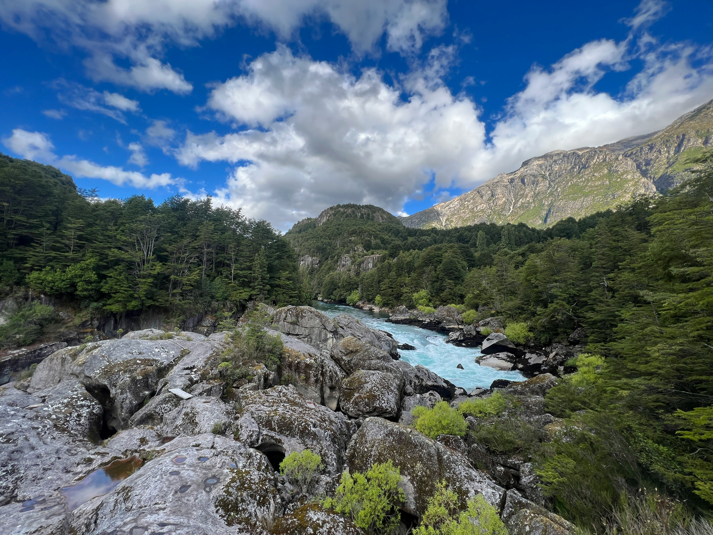
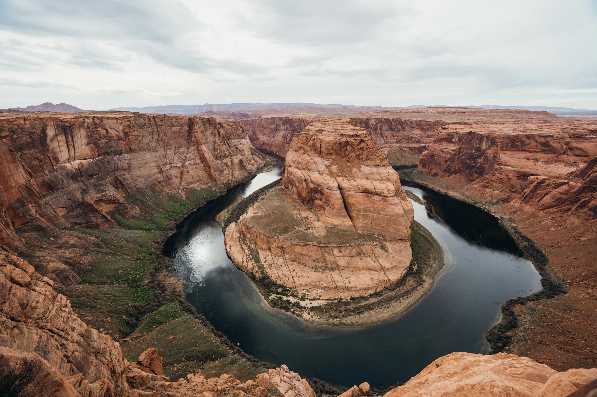
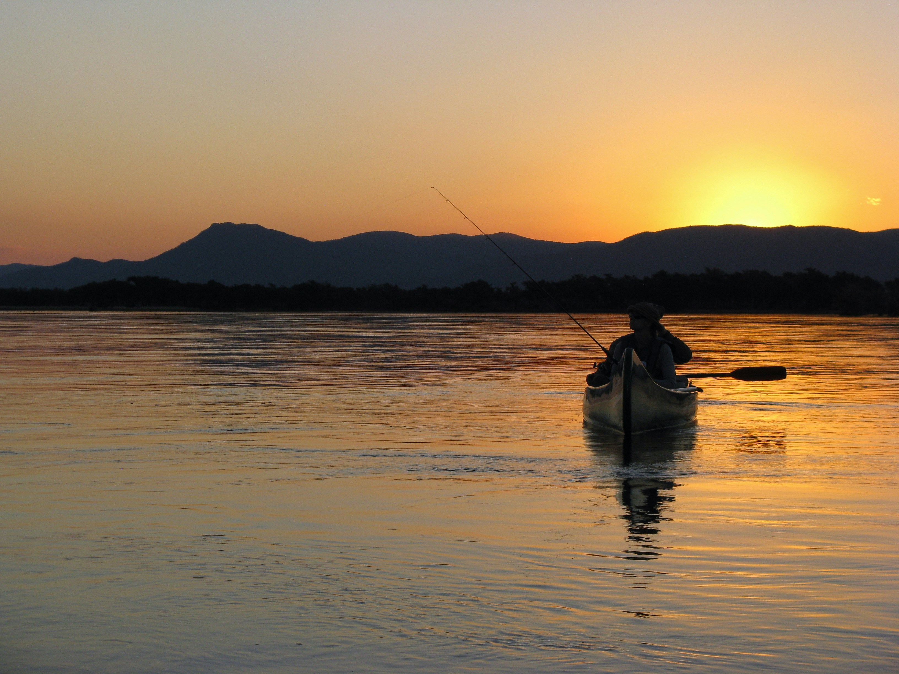

Best Places to Go
There are many cool places around the world that you can visit to make thrilling new experiences. While there are many different opinions of what the best places in the world are, our goal is to share some. Our hope is that you ccan find exciting new places that allow you to make memories thay you will never forget.
Top 3 Places
According to popular opinion, these are the best 3 places to go white water rafting in the world. Although, there are so many more out there that are very enchanting.
South America
Futaleufú River - Chile
These rivers have Class V rapids. Making it one of the most thrilling destination spots in the world.
North America
Grand Canyon - United States
These rivers are Class 4 rapids. Additionally, there are 226 miles of amazement waiting for you to cross it.
Africa
Zambezi River - Zambia
In southern Africa, we have a wonderious river awaiting your arrival. With Class V rapids, you can experience new sites while also having the time of your life.
